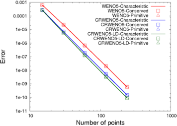
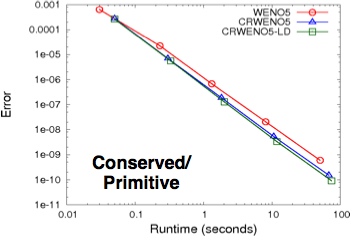
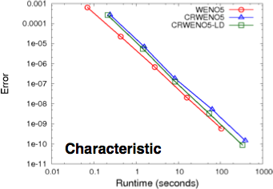
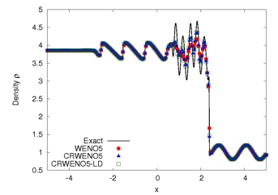
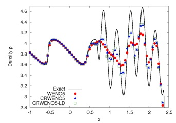

One-Dimensional Euler Equations
The Shu-Osher problem describes the interaction between a shock wave and an entropy wave which results in high frequency waves behind the shock. The CRWENO schemes shows much better resolution of the high-frequency waves compared to the WENO scheme, while maintaining a non-oscillatory behavior across the discontinuities. The results are obtained using the 5th order CRWENO and WENO schemes and 3rd order TVD-RK3 time-stepping.
Entropy Wave Convection
The 5th order CRWENO and WENO schemes are compared for a smooth problem - advection of an entropy wave over a periodic domain, to analyze accuracy and convergence. For the same order of convergence, the CRWENO scheme shows a significantly lower absolute error than the WENO scheme.
The reconstruction of conserved, primitive and characteristic variables yield identical solutions for a smooth problem.
The Euler equations describe the dynamics of inviscid flows. The CRWENO schemes are applied the one-dimensional Euler equations. They are a system of non-linear hyperbolic partial differential equations and thus, they admit discontinuities in the solution. The scalar interpolation schemes are extended to vector quantities through the reconstruction of conserved, primitive and characteristic variables.
The convergence and accuracy of the new scheme is assessed for a smooth flow problem - advection of an entropy wave. The Shu-Osher problem describes the interaction of a shock wave with a density wave resulting in small length-scale waves. The performance of the CRWENO schemes is assessed for this problem.
Shock-Entropy Wave Interaction (Shu - Osher Problem)





The CRWENO schemes have a higher computational efficiency for the reconstruction of conserved and primitive variables. However, the reconstruction of characteristic variables requires the solution of a block tridiagonal system at each iteration. The CRWENO schemes are thus less efficient for the characteristic formulation.


Contact: ghosh (at) mcs (dot) anl (dot) gov